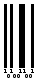

| Length | Type | checksum |
|---|---|---|
| variable | numeric | optional |
The standard 2 of 5 is variable length and includes an optional checksum digit 1
Calculating the standard 2 of 5 checksum digit is very simple :
( 10 - [ (3 * Odd + Even) modulo 10 ] ) modulo 10
Ainsi, l'exemple donne :
so the checksum of 87654321 est 2
Standard 2 of 5 message : Checksum :
A start sequence starts the barcode : 11011010
Digit are encoded according to the following table :
| digit | sequence |
|---|---|
| 0 | NNWWN |
| 1 | WNNNW |
| 2 | NWNNW |
| 3 | WWNNN |
| 4 | NNWNW |
| 5 | WNWNN |
| 6 | NWWNN |
| 7 | NNNWW |
| 8 | WNNWN |
| 9 | NWNWN |
"N" are encoded as "1" and "W" as "111", each one are separated by a "0", so the resulting table is :
| digit | sequence |
|---|---|
| 0 | 10101110111010 |
| 1 | 11101010101110 |
| 2 | 10111010101110 |
| 3 | 11101110101010 |
| 4 | 10101110101110 |
| 5 | 11101011101010 |
| 6 | 10111011101010 |
| 7 | 10101011101110 |
| 8 | 11101010111010 |
| 9 | 10111010111010 |
A stop sequence ends the barcode : 11010110
Each element of the binary sequence is represented by a space of equal width, it is a "1" or "0". The "1" are represented by spaces filled and "0" with empty spaces.
Please fill in the code :